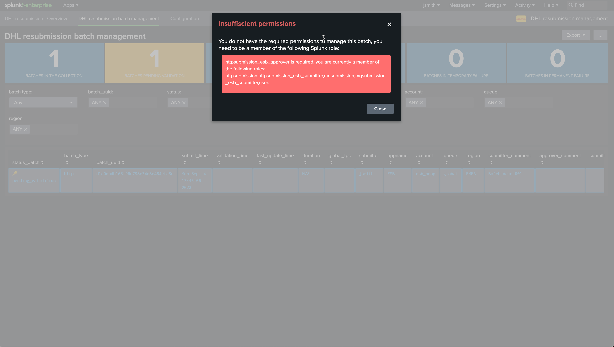
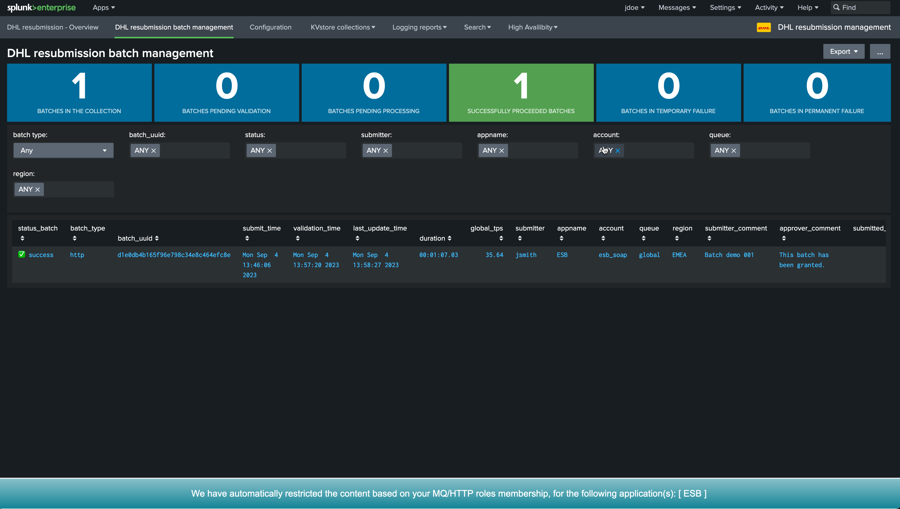
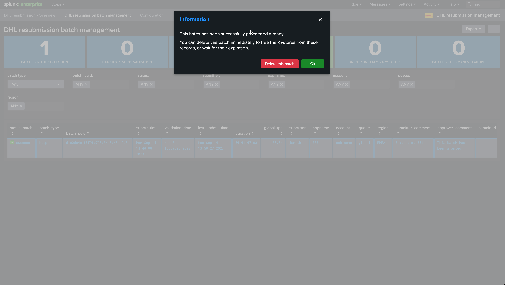
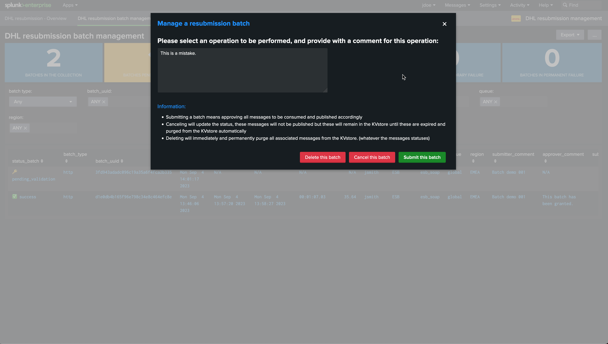
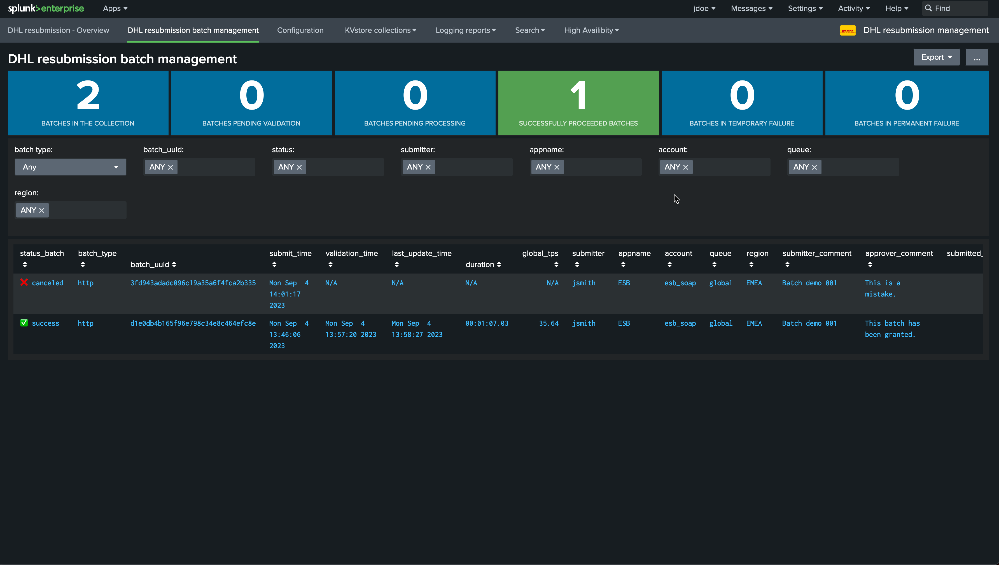

Role Based Access Control (RBAC)¶
Builtin roles¶
The application contains different roles as part of its configuration, which would be used via inheritance to provide access and permissions to the application and its sub-components.
The embedded roles are:
Role |
Description |
|---|---|
|
provides access to the application for a submitter or an approver for MQ |
|
provides access to the application for a submitter or an approver for SOAP HTTP(s) |
|
provides access to the application and grants permissions to manage batches of all applications for MQ |
|
provides access to the application and grants permissions to manage batches of all applications for HTTP(s) SOAP |
Providing RBAC access for submitters & approvers¶
Based permissions to submit and approve messages¶
A typical submitter user for MQ and SOAR would need to inherit from the following builtin roles:
Users who should be able to submit messages and manage batches should inherit from these builtin roles:
mqsubmissionhttpsubmission
These roles provides:
Access to frontend custom commands allowing to interact with the applications (such as calling the putmqrelay / puthttprelay commands to submit messages)
Access with write permission to the related KVstore collections and any other Splunk Knowledge objects needed
Providing RBAC access for submitters¶
Submitters should be a member of one or more submitter roles, based on the following convention:
For MQ:
mqsubmission_<applicationName>_submitter
For SOAP:
httpsubmission_<applicationName>_submitter
Hint
Explicit role membership
Submitters need to be an explicit member of the role
Inheritance is not supported
The association with a given application is made by extracting the application name from the convention
Backends verify the user role membership to allow or deny the operation
The different user interfaces also filter automatically on the messages users can see based on their roles membership
Finally, roles are lower case only, therefore the application names are systematically converted to lower case
Providing RBAC access for approvers¶
When messages are submitted for reprocessing to MQ or HTTP(s) SOAP, messages are associated with a batch identifier and stored in a transilient state “pending”. Messages will be processed to the destination as soon as the batches have been allowed by approvers.
The following convention is used to identify if a user is allowed to approve a batch, this convention relies on the user’s roles membership:
For MQ:
mqsubmission_<applicationName>_approver
For SOAP:
httpsubmission_<applicationName>_approver
Hint
Explicit role membership
Approvers need to be an explicit member of the role
Inheritance is not supported
The association with a given application is made by extracting the application name from the convention
Backends verify the user role membership to allow or deny the operation
Finally, roles are lower case only, therefore the application names are systematically converted to lowercase
Superadmin roles¶
In addition, the super admin roles allow a user member to submit and manage any kind of message, no matter the associated application.
For MQ:
mqsubmission_superadmin
For SOAP:
httpsubmission_superadmin
RBAC by the example¶
For the purpose of the documentation, we have two users:
jsmithwho is a submitter user for an application named “ESB”jdoewho is an approver user for that same application
Submitting example¶
Our submitter user is a member of the roles:
mqsubmission_esb_submitterhttpsubmission_esb_submitter
Our user jsmith has submitted a batch for reprocessing, the manage batch UI shows the pending status of the batch:
{kind=link}
The user is not allowed to manage the batch himself, therefore the user cannot validate the processing nor cancel or delete the batch, the UI should show the following message:
{kind=link}
Validating example¶
Our approver user is a member of the roles:
mqsubmission_esb_approverhttpsubmission_esb_approver
Our user jdoe can effectively manage the pending batch:
{kind=link}
{kind=link}
After some minutes, messages have been processed successfully, the batch is now terminated:
{kind=link}
Our user can also decide to purge the batch once it has been processed:
{kind=link}
Or cancel another pending batch which should finally not be processed:
 {kind=link}
{kind=link}